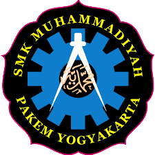
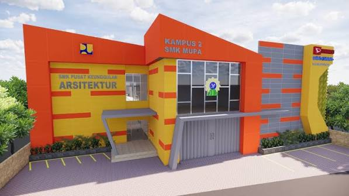
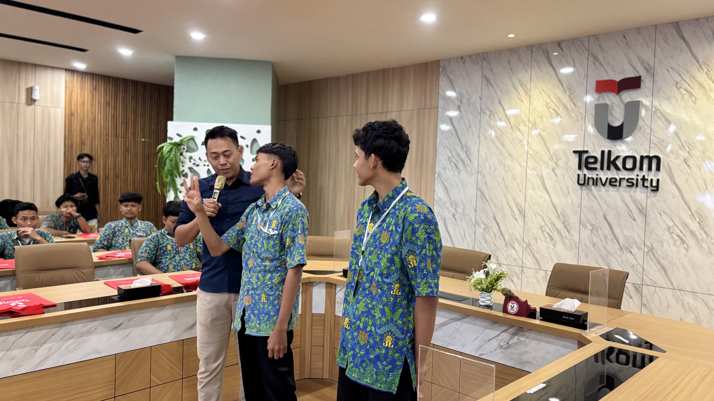

Visi
Menjadi sekolah kejuruan rujukan yang menghasilkan lulusan berkarakter Islami, profesional, dan kompetitif di era global.

SMK Muhammadiyah Pakem Sekolah Unggul, Kreatif dan Berkemajuan
Sekolah Unggul, Kreatif dan Berkemajuan
Membentuk lulusan berakhlak, profesional, dan siap berkarya.
Kenali Sekolah KamiTentang Kami
SMK Muhammadiyah Pakem Yogyakarta adalah lembaga pendidikan kejuruan yang berdedikasi dalam mencetak generasi muda yang ahli di bidangnya. Dengan fasilitas pembelajaran yang terus dikembangkan, termasuk Kampus 2 yang menjadi pusat keunggulan Arsitektur, sekolah menyiapkan siswa untuk melanjutkan pendidikan, memasuki dunia kerja, maupun berwirausaha.
Arah Pendidikan
Menjadi sekolah kejuruan rujukan yang menghasilkan lulusan berkarakter Islami, profesional, dan kompetitif di era global.
Belajar dan Berkarya
Mempelajari perancangan bangunan, tata letak ruang, dan estimasi biaya sesuai standar industri konstruksi.
Membekali siswa dengan keahlian perawatan dan perbaikan kendaraan ringan menggunakan teknologi otomotif.
Mempelajari pemrograman, pengembangan website, aplikasi, basis data, dan logika algoritma.
Mengembangkan kreativitas dalam pembuatan animasi 2D dan 3D, storyboard, serta efek visual.
Mengenal Sekolah
Pembelajaran berfokus pada penguatan kompetensi sesuai program keahlian dan kesiapan menghadapi dunia kerja.
Pendidikan karakter menjadi bagian dari upaya membentuk lulusan yang berakhlak dan bertanggung jawab.
Kampus 2 SMK MUPA menjadi pusat keunggulan Arsitektur dengan fasilitas untuk mendukung kegiatan belajar.
Cerita Visual
Foto gedung sekolah dan ilustrasi kegiatan pembelajaran.


Hubungi Kami
Yogyakarta
Untuk informasi resmi mengenai sekolah dan program keahlian, silakan menghubungi pihak sekolah melalui kanal resminya.